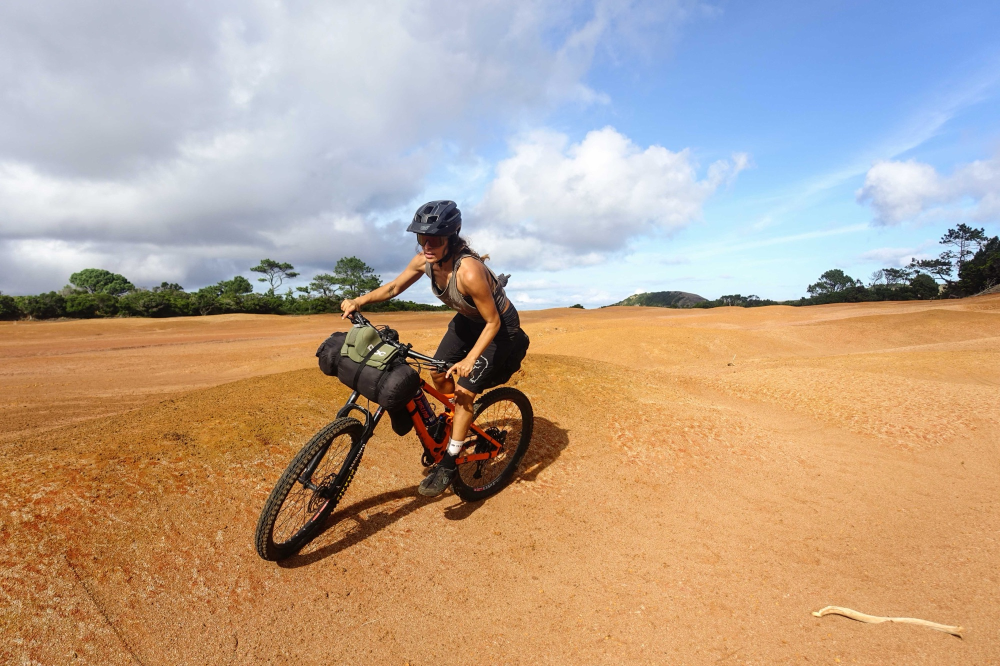

In the spring of 2023 we packed our passion in life and shipped it over
to São Miguel — 2 enduro bicycles, 2 surf boards and a bike trailer. Ending up spending
10 weeks biking and sleeping in a tent around 4 islands in the Azores.
That was enough, we knew by then that we wanted to move here permanently
and become part of the community.
Hello there! I'm Jallas born in south Sweden. Since south Sweden is kinda flat I started out with cross
country biking but lycra and pushing on the uphills was not really me. The free ride mountain bike was more
my style.
In 2012 I traveled to Portugal for the first time to pursue my surf dream and from then on I just knew that
this was where in the world I wanted to be. Biking has also always been a big part of my life wherever I was,
from working as a bike messenger, bikepacking or riding downhill, I always enjoy riding my bike. Not only
biking but also creating, building and maintaining the bike trails is something I really like spending my
time on.
After discovering the Azores by bike. Me and my partner Juliana really enjoyed the island life. We felt
that this is were we want to be and create — Wheels on Fire.

Juliana
Porto, Portugal → São Miguel
Hey! I'm Juliana from Porto, Portugal.
I'll never forget the first time I learnt how to bike. Since then biking has always felt more than just the
act of riding a bike — represents freedom and creativity and it's the best way to get around! And it's funny
how the surroundings and the kind of bike I'm riding can make every experience very unique. Riding in the city
with my singlespeed, everything is fast and I love it! It's like a game: the other cyclists, the people, the
traffic.
When mountainbiking is different, being out in the wild riding the nature's “cool obstacles” like the
terrain, if it's rocky, rooty, steep, uphill or in flowy trails and jumps. Every bike day is different and
teaches so much more than just skills, but truly being in touch and in tune with everything and myself.
Wheels on Fire is born, out of the burning passion of riding, travelling and is inspired by
the volcanic terrain of this amazing place that is the Azores.